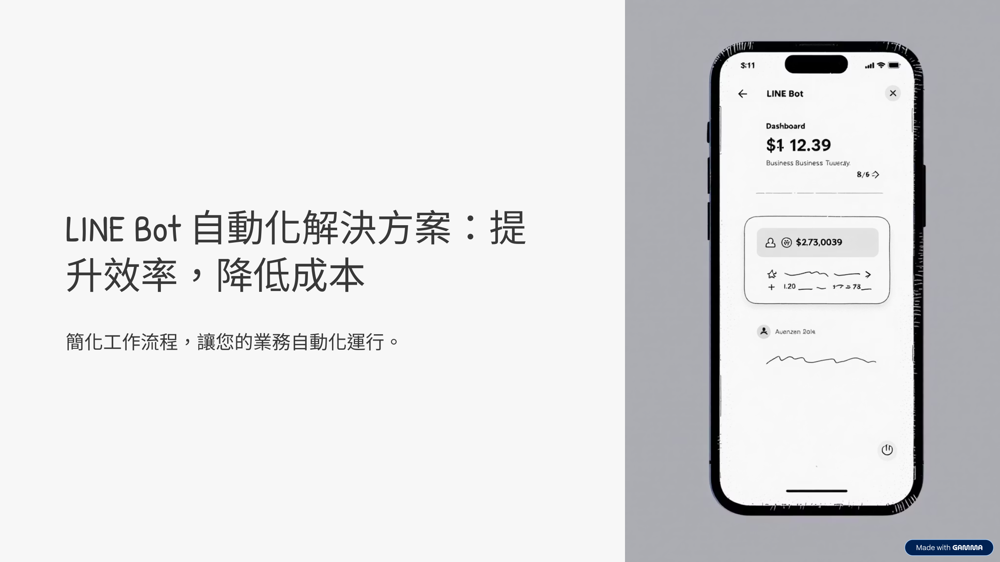
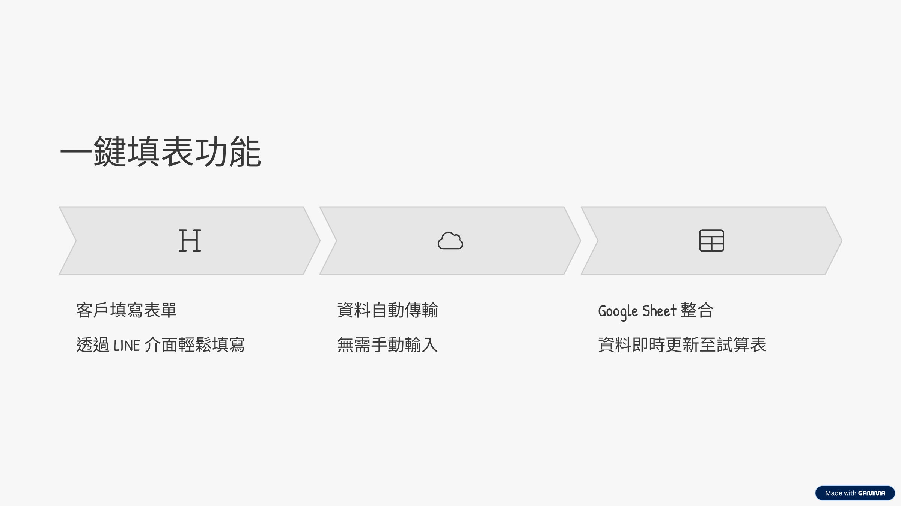
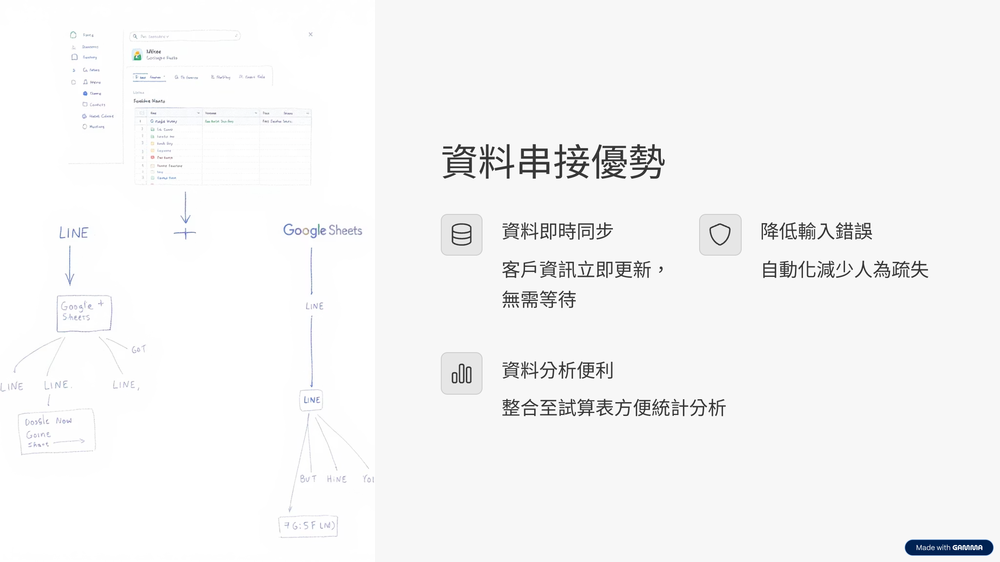
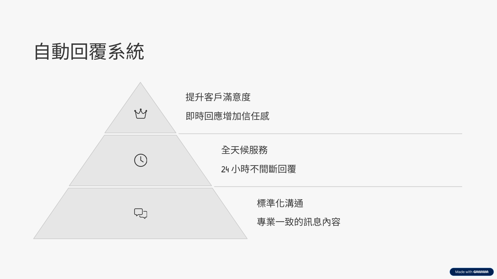
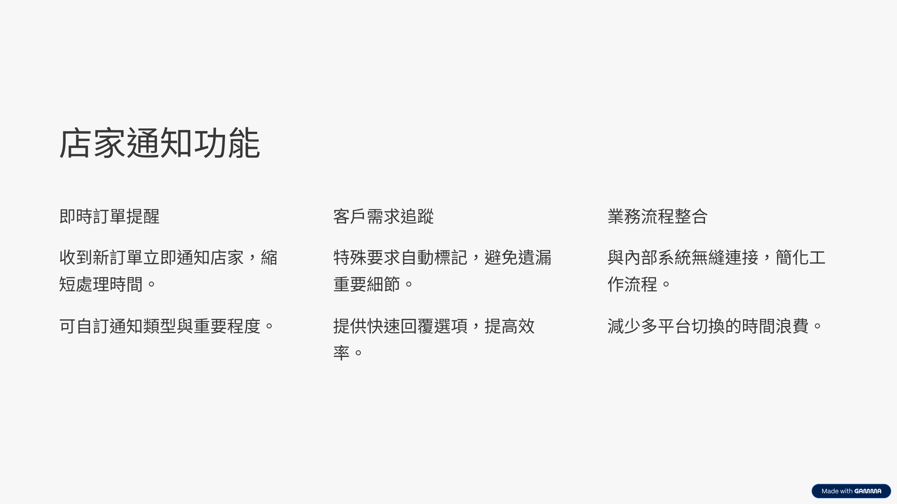
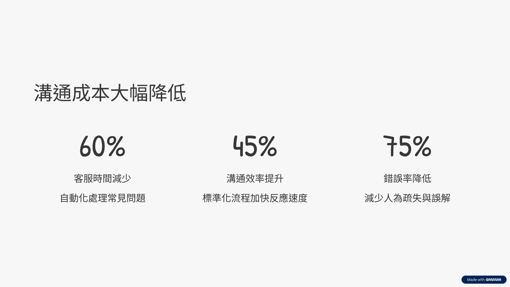
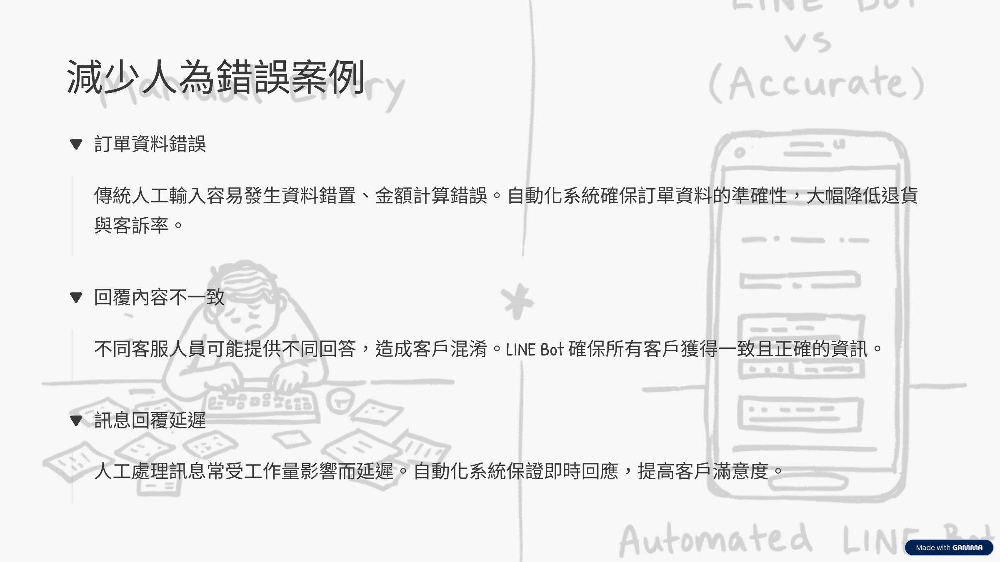
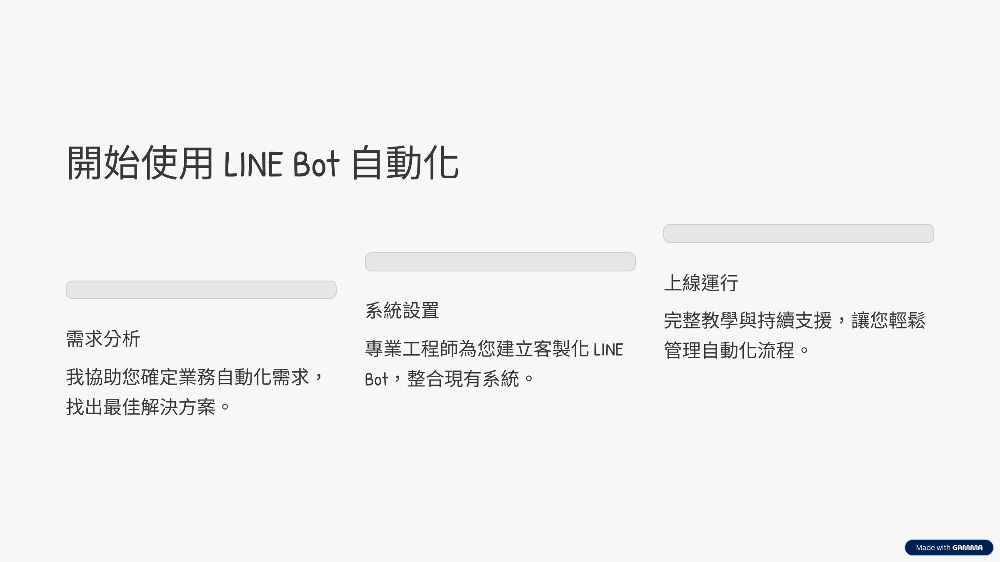

🔧 我們的做法
主頁
關於我
我們的做法
成功案例
聯絡我
一鍵填表，資料直接串接到 Google Sheet
自動回覆客戶、通知店家，減少溝通成本
LINE Bot 訊息自動化，減少人為錯誤
系統流程展示

圖 1：LINE Bot 自動回應範例

圖 2：訊息截圖 1

圖 2：訊息截圖 1

圖 3：訊息截圖 2

圖 4：訊息截圖 3

圖 5：訊息截圖 4

圖 6：訊息截圖 5

圖 7：訊息截圖 6